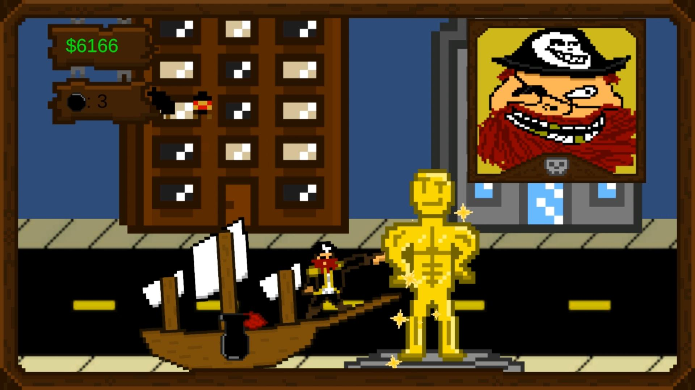

Project Description
Slip Ship was a submission to the 2026 Bigmode Game Jam, made in ten days on a team of three. It is likely my largest undertaking for a game jam in my time as a game developer. Slip Ship has a simple core loop of launching yourself forward, collecting money for the havoc you wreack, buying upgrades, and doing it again! If you get far enough, you win, but the game is really about the journey you take to get there. In addition to crashing straight through buildings, you can shoot them with cannons, increasing the need for a pirate's famous sense of critical thought and careful strategy. In working on this project, I made full use of my multidisciplinary major, doing programming, art, audio, documentation, and team management in large measures for ten days while maintaining my life as a full-time student. I honed my skills in C# programming, the Unity engine, pixel art, working with sound effects, and strategy for documentation, and took a lesson in being a unicorn. (It's really hard!)
My Roles
Art and Design
- Created the entire library pixel art assets from scratch
- Progenated the original concept and aesthetics for the game around the jam theme "slick"
- Created, edited, and implemented sound effects
Programming
- Programmed the ship movement, building interactions, cannon system, and general gameplay setup
- Created all introductory screens, scene transitions, and game state logic.
- Did refactory and supportive work on the upgrade, shop, and level generation systems
- Consistently provided detailed state-of-the-games based on existing code.